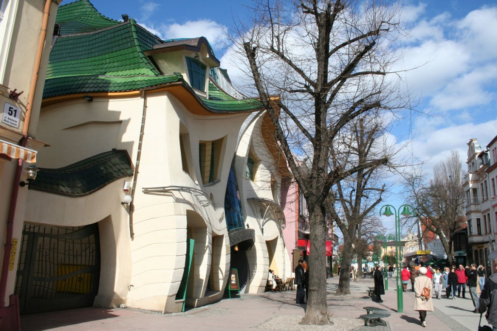
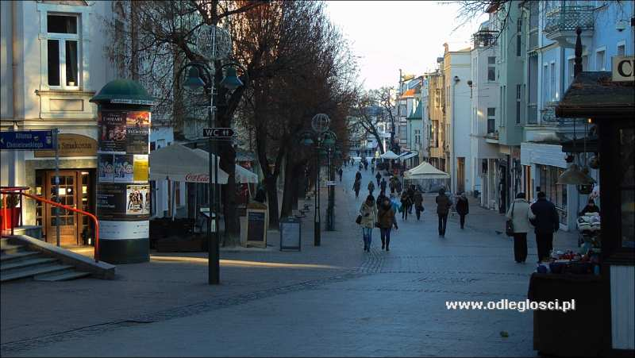
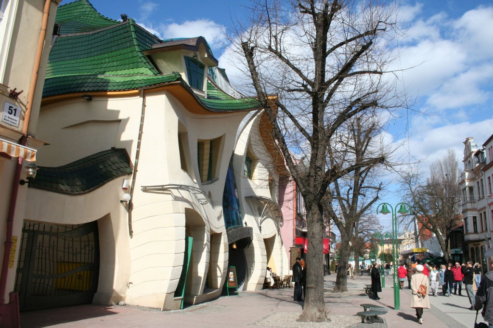
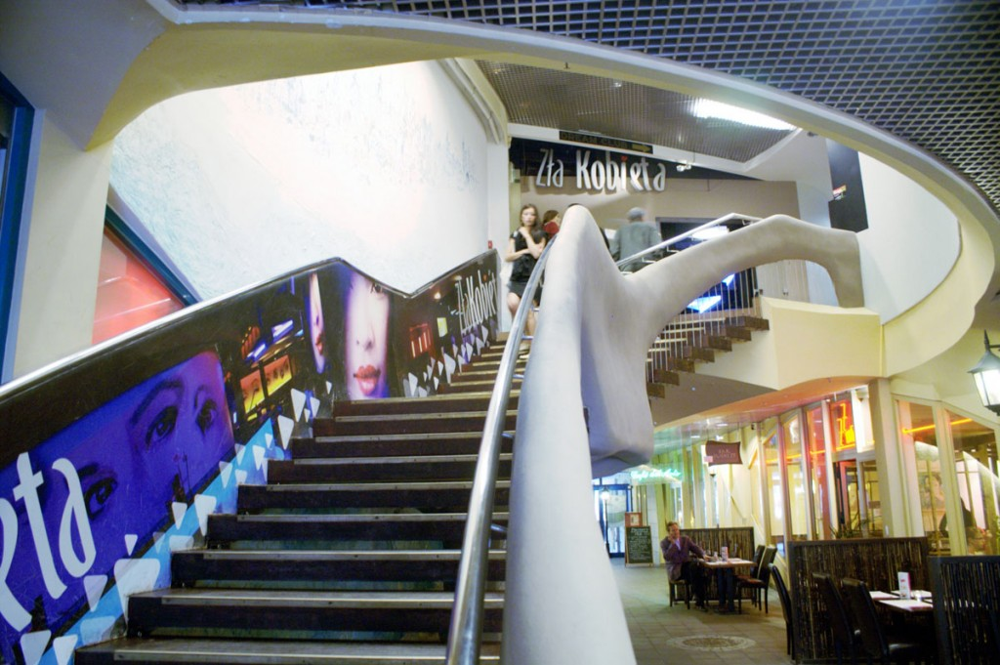
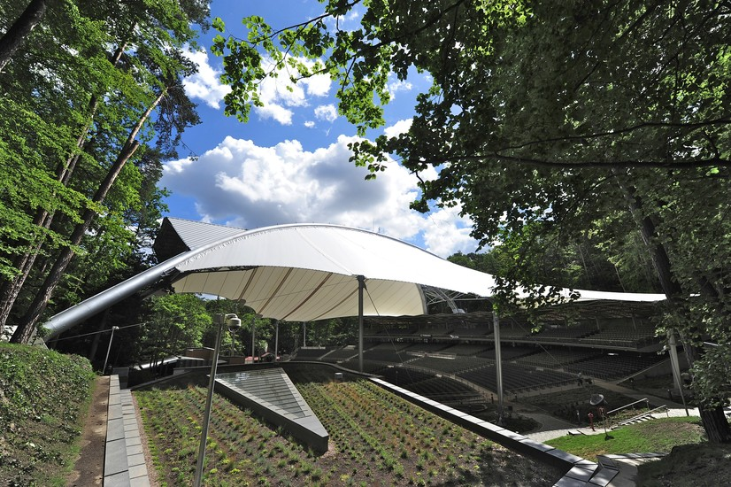
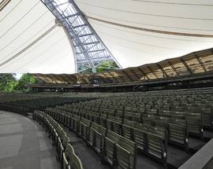
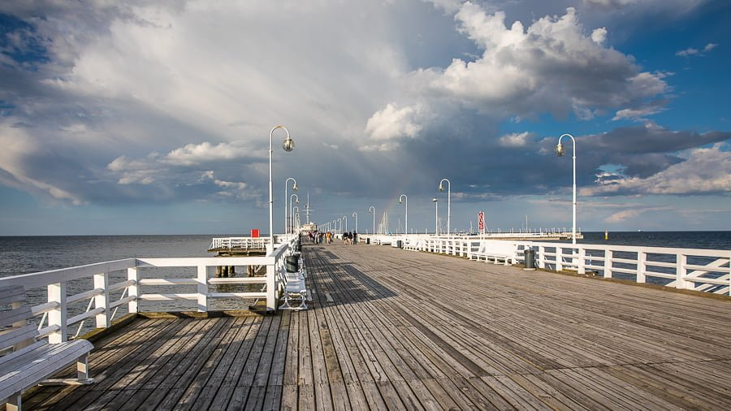
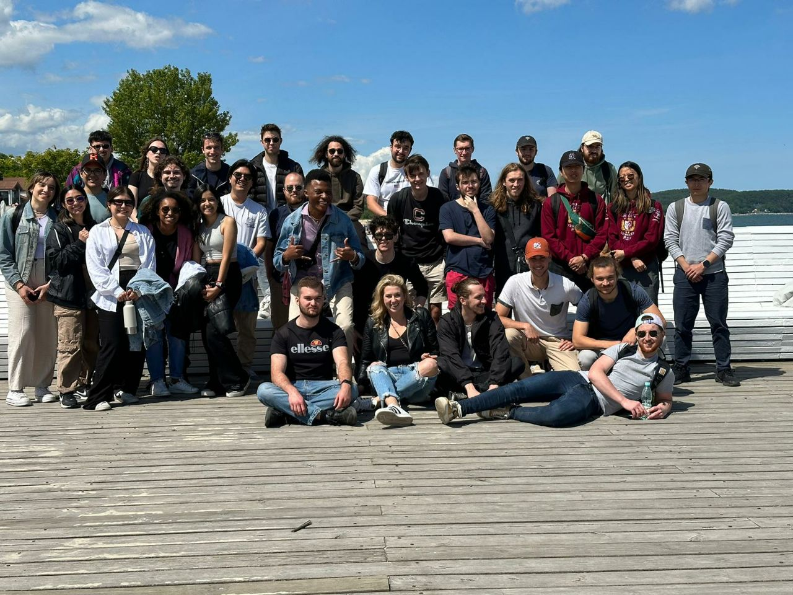
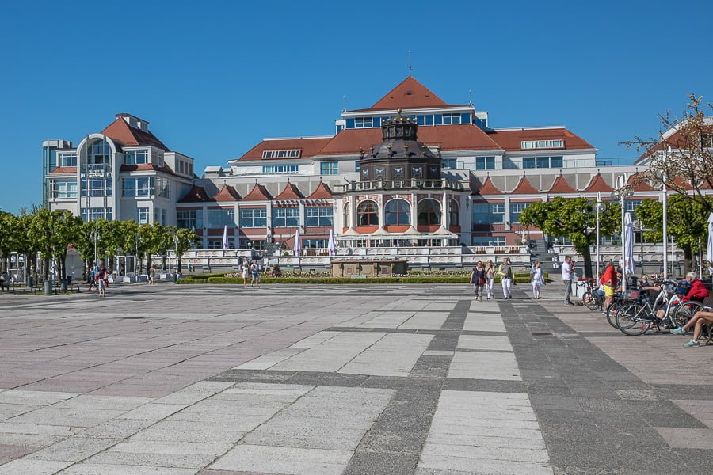
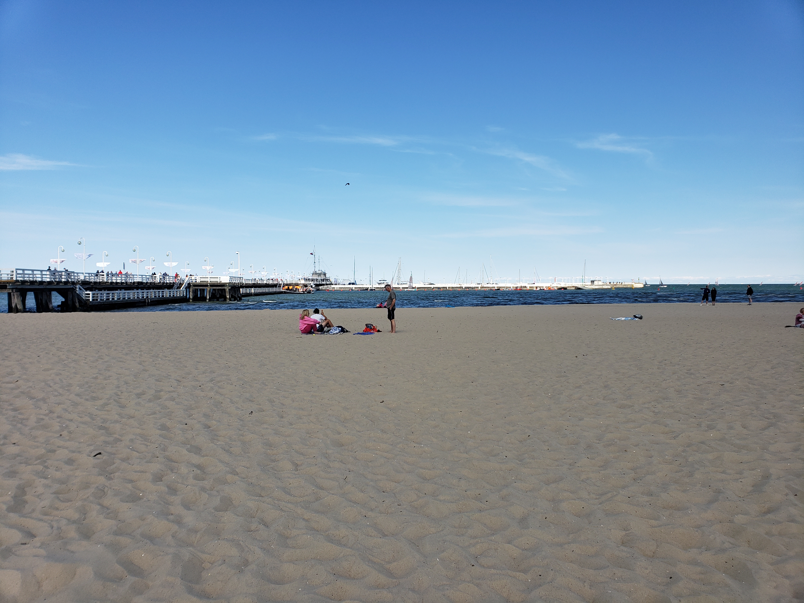

Trip
For those seeking a lively and vibrant atmosphere, Bohaterów Monte Cassino Street is the place to be. This bustling pedestrian street is lined with charming cafes, restaurants, boutique shops, and art galleries. Enjoy a cup of coffee at a street-side café, browse through unique souvenirs, or savor delicious Polish cuisine while immersing yourself in the lively ambiance. a friendly tip : when walking along the street, keep in mind your objectives otherwise you can easily find yourself at the end with a bag full of souvenir and other objects.
Crooked House (Krzywy Domek): 
Trip in sopot
Nestled along the stunning Baltic Sea coastline, Sopot is a charming seaside town that captivates visitors with its natural beauty, rich history, and vibrant atmosphere.
Whether you're seeking relaxation on sandy beaches or eager to immerse yourself in cultural delights, Sopot has something for everyone. During our stay the ESN organize a trip to discover Sopot which is considered like one of the most beautiful city in poland. after a travel time of 5 Hours by train, we stopped at Gdansk then took another train to go to Sopot.
In total we spent 05 hours and 45 minutes to arrive at our final stop.it seemed too long for me but after our arrival i immediately realize that the trip was worth it. In this article, Join us as we embark on a journey to discover the top places to visit in this Polish gem.
Bohaterów Monte Cassino Street:

A view of Bohaterów Street .
For those seeking a lively and vibrant atmosphere, Bohaterów Monte Cassino Street is the place to be. This bustling pedestrian street is lined with charming cafes, restaurants, boutique shops, and art galleries. Enjoy a cup of coffee at a street-side café, browse through unique souvenirs, or savor delicious Polish cuisine while immersing yourself in the lively ambiance. a friendly tip : when walking along the street, keep in mind your objectives otherwise you can easily find yourself at the end with a bag full of souvenir and other objects.
Crooked House (Krzywy Domek): 
Crooked house Entrance

Crooked House atmosphere.
located on Monte Cassino street, Prepare to be enchanted by the Crooked House (which is a shopping center), a remarkable architectural marvel that looks like something straight out of a fairytale. With its undulating walls and twisted façade, this whimsical building is a must-visit attraction. Explore the interior, which houses a variety of shops, cafes, and even a theater, and marvel at the creativity behind its unique design.
Forest Opera (Opera Leśna):

Opera Leśna 1

Opera Leśna 2
Located at 12 Stanisława Moniuszki St,81-829 Sopot Immerse yourself in a cultural experience at the Forest Opera, an enchanting and vast open-air amphitheater located in the heart of Sopot's lush forest. This magical venue hosts a variety of concerts, performances from very popular artist, and festivals throughout the year, allowing visitors to enjoy music and theater in a truly picturesque setting.
Sopot Pier (Molo):

Sopot Pier
No visit to Sopot is complete without strolling along the iconic Sopot Pier, also known as Molo (which is the translation of Pier in polish) . Extending into the sea for over half a kilometer, it offers breathtaking views of the coastline and the shimmering Baltic Sea.
With some friends, we took a walk on the pier. since the weather was good day, the site was quite crowdy but it didn't stop us from enjoying our walk. while some decide to eat in a restaurant at the pier ,I prefer to soak in the serene and fresh atmosphere and admire the astonishing view i had from my seat. To enter the Pier, you shall pay 5 Zloty (june 2023).

picture with other travellers

view from the pier 1

view from the pier 2
but close to the pier you have the sheraton Hotel which is quite awesome.

Sheraton Hotel
Sopot Pier (Molo):
Sopot's pristine sandy beach beckons visitors with its golden shores and refreshing sea breeze. Spend a relaxing day sunbathing, take a dip in the crystal-clear waters, or engage in water sports activities such as paddleboarding or windsurfing. With numerous beach bars and restaurants nearby, you can easily indulge in delicious meals while enjoying the beachfront atmosphere.

Sopot Beach

Sopot Beach
Sopot, with its picturesque coastline, captivating landmarks, and vibrant atmosphere, offers a perfect blend of relaxation and cultural experiences. From the iconic Sopot Pier to the lively streets filled with cafes and shops, we really enjoyed every corner of this seaside gem that we could visit. Whether you're a nature enthusiast, history buff, or simply seeking a tranquil beach getaway, Sopot promises an unforgettable experience that will leave you longing to return again and again. But the history doesn't stop here
for us. during our Weekend, we also visited another City which is Gdynia, but this will be the topic of another article.
Sources: